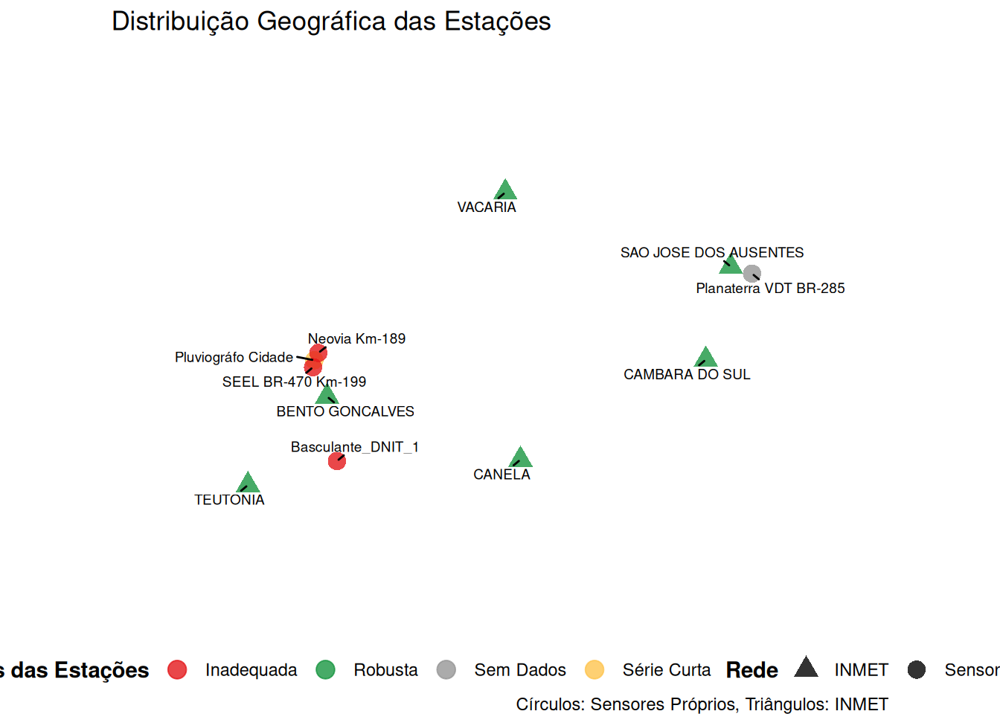

Exploração do MongoDB e Estrutura de Dados
Olá equipe! Este relatório apresenta o resultado da nossa exploração no banco de dados MongoDB da plataforma. O objetivo é documentar quais coleções existem, como os dados estão estruturados atualmente e, por fim, demonstrar como os novos limiares de alerta precisarão ser formatados para uma integração tranquila no sistema.
1. Coleções Mapeadas no MongoDB
Durante a análise do banco de produção, identificamos três coleções principais que são o coração do sistema de alertas e telemetria:
limits: Armazena os parâmetros matemáticos e os limiares atuais de chuva que acionam os alertas na interface.sensors: Contém o cadastro, os metadados e a localização geográfica das estações e pluviógrafos.weatherdatas: Armazena as leituras de telemetria recebidas contínua e ativamente pelos sensores.
2. Estrutura Atual dos Dados
Abaixo, extraímos uma pequena amostra de cada coleção para visualizarmos as colunas e chaves que compõem os documentos hoje.
2.1 Coleção: limits (Limiares Atuais)
A estrutura legada possui uma granularidade baseada em múltiplas janelas contínuas de tempo para uma mesma estação (horas: 24, 48, 72, 96, 120). Também salva os 4 níveis de alerta (r0 a r3).
2.2 Coleção: sensors (Metadados das Estações)
Tabela de cadastro físico das estações. Contém chaves importantes para visualização no mapa, como sensorId, name, latitude e longitude.
2.3 Coleção: weatherdatas (Métricas de Telemetria)
Armazena o histórico contínuo de leituras em campo. Aqui estão as informações de chuva (rainfall), relacionadas aos sensores através de um ID.
3. Novos Limiares Calculados
Como prova de conceito, extraímos os dados diretamente neste relatório e aplicamos o nosso novo Motor Matemático (Tweedie com \(p=1.5\)).
3.1 Estações INMET (Atualmente utilizadas pelo Mongo)
Estes são os limites definitivos para as estações INMET que a plataforma já consome hoje. Eles foram cruzados e extraídos da nossa rotina de treinamento histórico principal.
3.2 Estações Locais (Sensores Próprios - “Meteorológica”, “Cidade”, etc.)
Abaixo, o relatório varre todos os registros brutos da coleção weatherdatas (removendo o sensor de testes testeEMA da análise), agrupa a chuva de cada estação em janelas contínuas de 96 horas, limpa os dias secos e treina o modelo preditivo exclusivo de forma instantânea. (Nota: Todas as estações cadastradas localmente são calculadas dinamicamente)
4. Mapa das Estações
Abaixo, apresentamos a distribuição geográfica das estações cadastradas na coleção sensors, diferenciando as da rede INMET e os sensores próprios da plataforma.

5. Plano de Integração e Atualização
Para que a plataforma comece a consumir as novas modelagens estatísticas, não será necessário alterar o schema do banco de dados ou a interface.
O pipeline de dados gerará um formato 100% compatível com a coleção limits que já existe. As diferenças nos dados enviados serão:
station: Preenchido com a mesma identificação de cada ponto.horas: Será fixado estritamente em96para todas as estações. (Essa padronização simplifica o alerta e demonstrou excelente confiabilidade na saturação do solo durante os novos testes).r0,r1,r2,r3: As colunas receberão as novas estimativas em milímetros que determinam os patamares de alerta.- Parâmetros Base:
mu,phiepowerserão atualizados com os novos indicadores das equações. - Demais controles (
__v,createdAt,updatedAt) seguem o mesmo padrão preenchido com datas atualizadas.
5.1 Frequência de Execução (Cronjob)
Como os limiares da distribuição de Tweedie são baseados no comportamento histórico de longo prazo, a variação de um único dia de chuva não causa mudanças bruscas nos gatilhos. Por conta disso, recomendamos que a rotina de re-treinamento e atualização dos limiares seja engatilhada semanalmente (ex: madrugadas de domingo).
5.2 Abordagem 1: Injeção Direta no Banco (Via R)
Nesta abordagem, o próprio script em R limpa a coleção e reinsere a matriz atualizada. É a forma mais rápida, operando diretamente via mongolite.
#| eval: false
library(mongolite)
# 1. Conecta na coleção Limits
m_limits <- mongo(collection = "limits", db = Sys.getenv("MONGO_DB"), url = Sys.getenv("MONGO_URL"))
# 2. Remove os limites legados (Drop seguro)
m_limits$remove('{}')
# 3. Insere o novo dataframe com limites 96h calculados
m_limits$insert(df_novos_limites)5.3 Abordagem 2: Webhook / API REST (Via cURL)
Caso se opte por não liberar acesso de escrita direto ao MongoDB por questões de arquitetura/segurança, o pipeline em R exportará um arquivo .json e fará um POST disparando a atualização para o Backend da plataforma via cURL.
# O R salva o df_novos_limites.json e notifica a API da plataforma
curl -X POST https://api.suaplataforma.com.br/v1/limits/sync \
-H "Content-Type: application/json" \
-H "Authorization: Bearer <SEU_TOKEN_DE_SERVICO>" \
-d @df_novos_limites.jsonDesta forma, o sistema fica completamente desacoplado: a estatística processa e notifica o backend, que por sua vez se encarrega de persistir a informação validada no MongoDB.